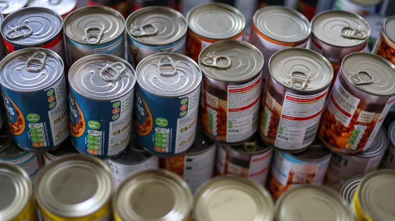

Real experiences, practical decisions, and lessons from the industry

How should food safety professionals evaluate dented cans, rust, and leakage during warehouse inspections?
This real case explores the practical decisions behind damaged canned products.
Metal cans protect food through a hermetic seal that prevents contamination from air, moisture, and microorganisms.
Mechanical damage may compromise this protection.